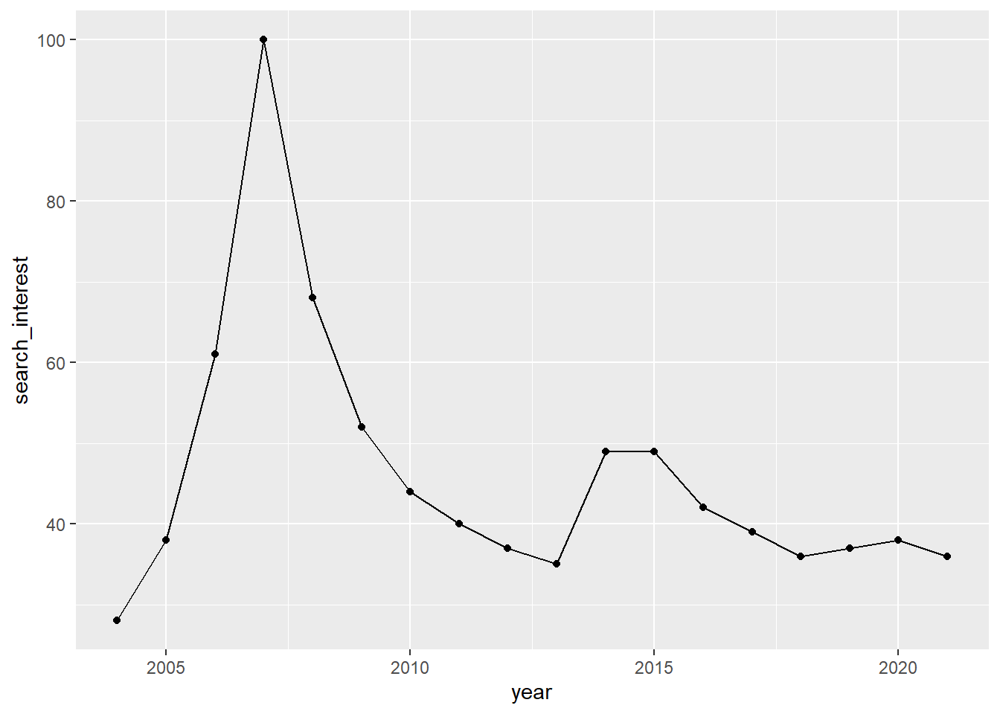
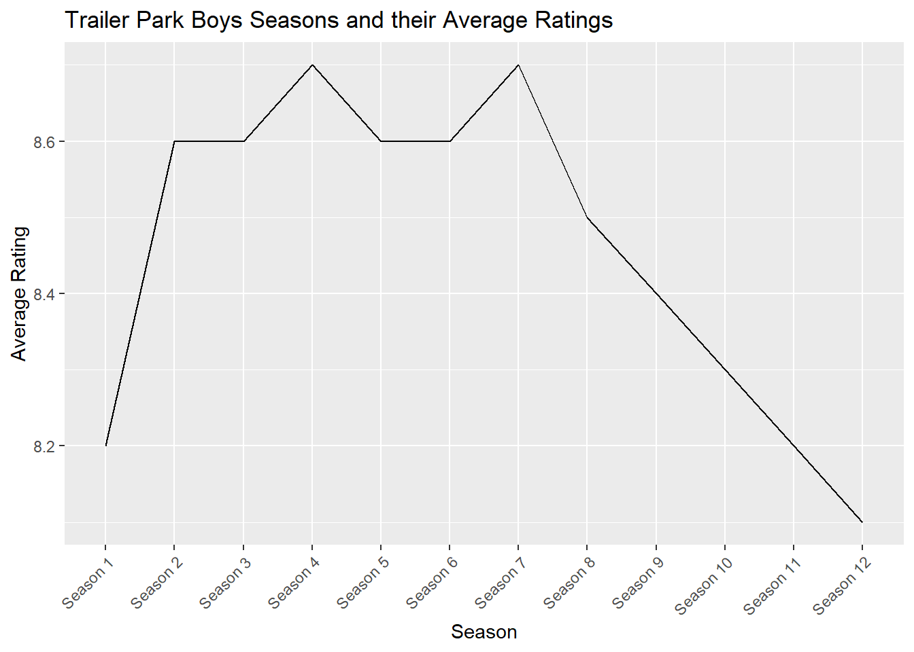

Quatro TPB
1 Trailer Park Boys (TV Series)
Trailer Park Boys is a Canadian mockumentary sitcom television series created by Mike Clattenburg that began airing in 2001 as a continuation of his 1999 film bearing the same name. The show follows the misadventures of a group of trailer park residents, including two lead characters in and out of prison, living in the fictional “Sunnyvale Trailer Park” in Dartmouth, Nova Scotia.
2 Trailer Park Boys - photo

2.1 Ratings
| Platform | Rating | Votes |
|---|---|---|
| Imdb | 8.6/10 | 46 527 |
2.2 Viewership over time
Unluckily, I couldn’t find such a data. That’s why I decided to use the number of search interest from google trends in order to visualise it
2.3 A graph of season-to-season changes in viewership

2.4 Description of the obseraved changes
Trailer Park Boys had a change in writers and producers after Season 7. This change could have led to a shift (variable avg_rating) in the show’s tone or direction, which may not have resonated well with the audience.